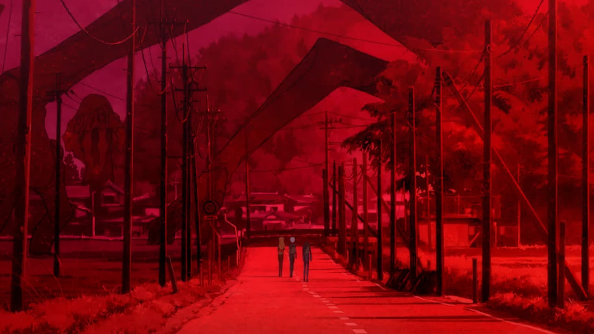

Being built!
Please come back later...
Expos!
Find various explanations of things I've posted online.
bento box grid with clickable links would be perfect here ( for the new site this could be just turned into a 'feed' list on the main page)